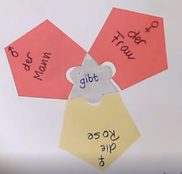

El concepto de casos
Kerstin Schwandtner
MLD - 2018/2019
Índice de la presentación
¿Qué son los casos?
El rompecabezas
Argumentos del verbo
Los rasgos semánticos
¿Qué son los casos?
El rompecabezas
¿Qué es el rompecabezas?
Entender una frase es como construir un rompecabezas:

Argumentos del verbo
Los rasgos semánticos
¡Muchas gracias por tu atención!